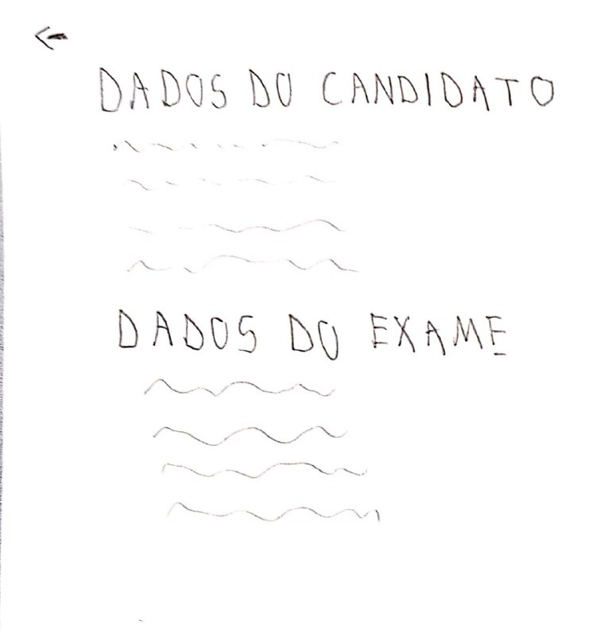
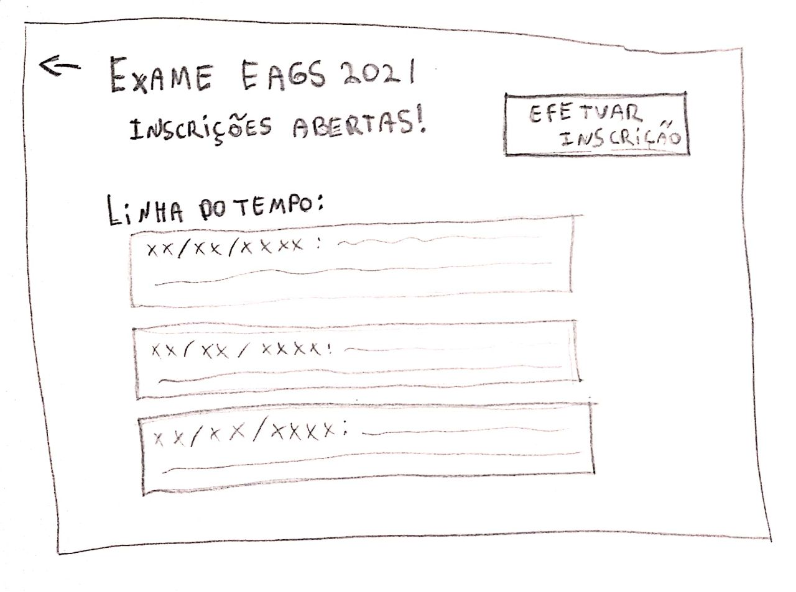
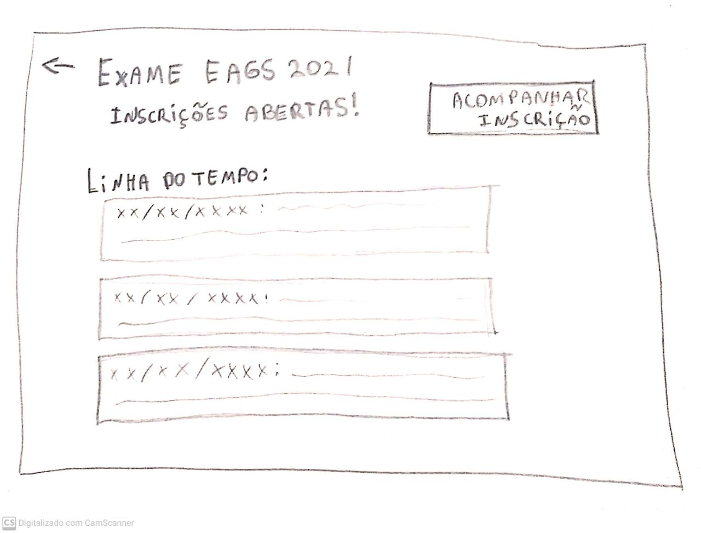
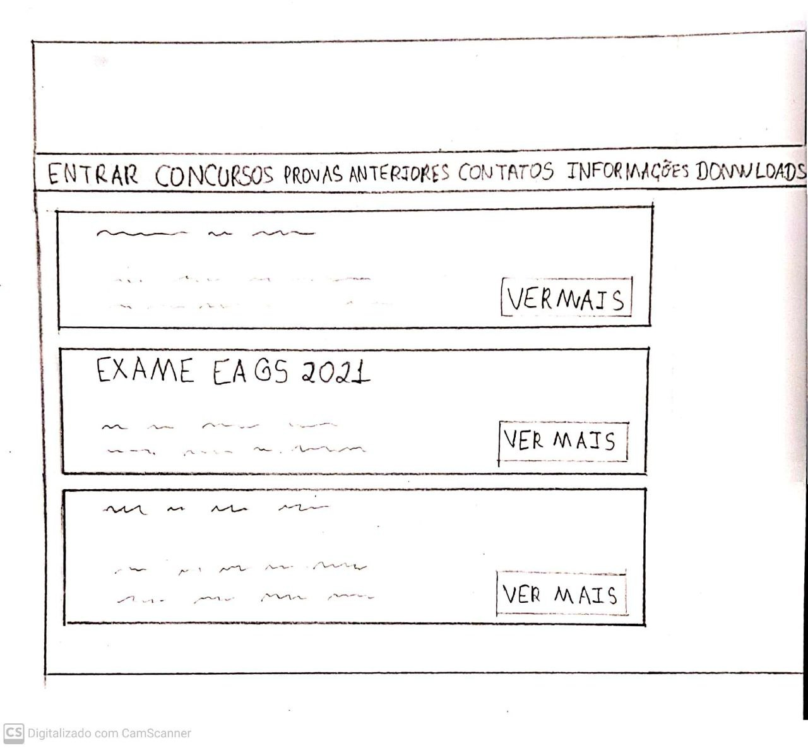
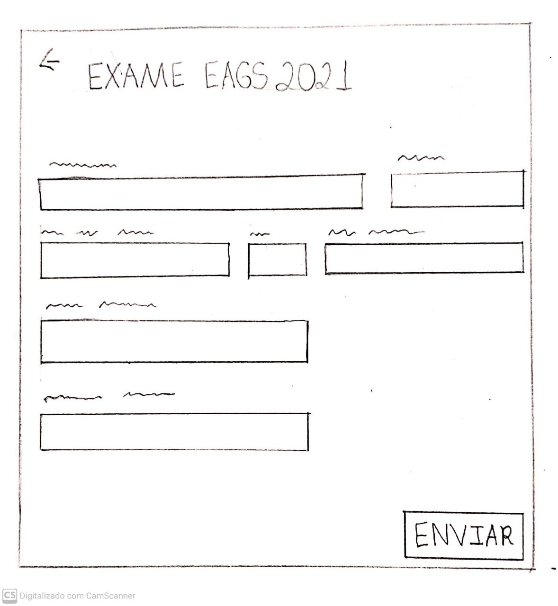
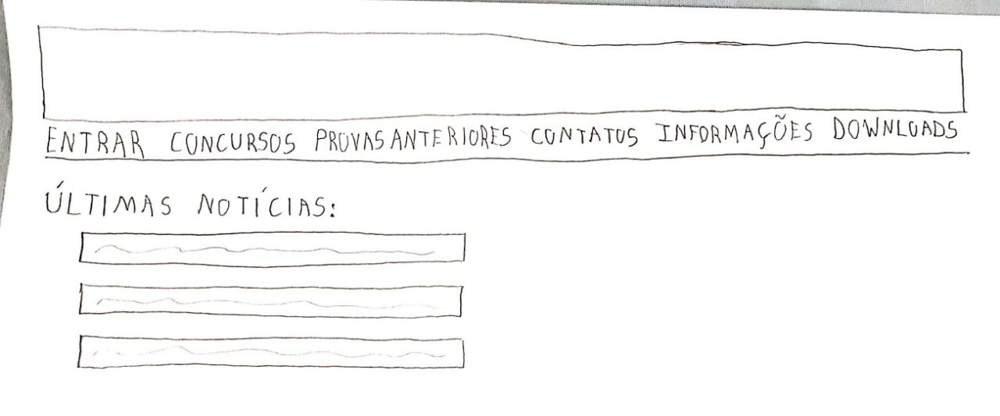
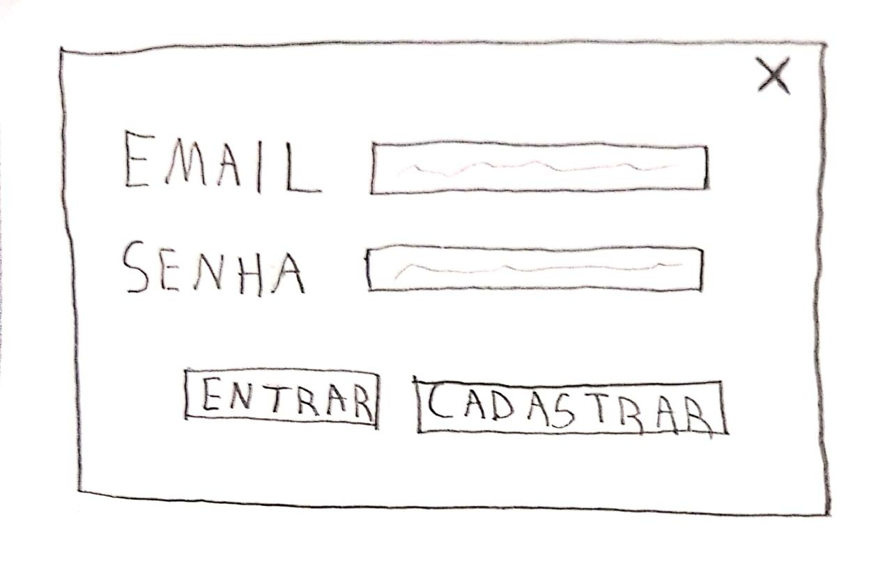
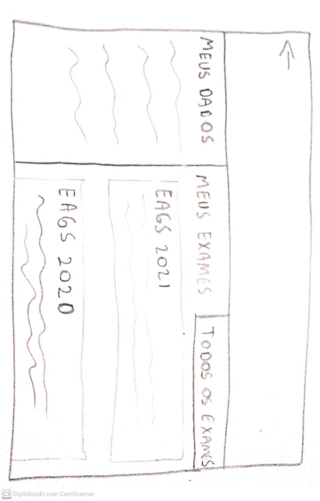
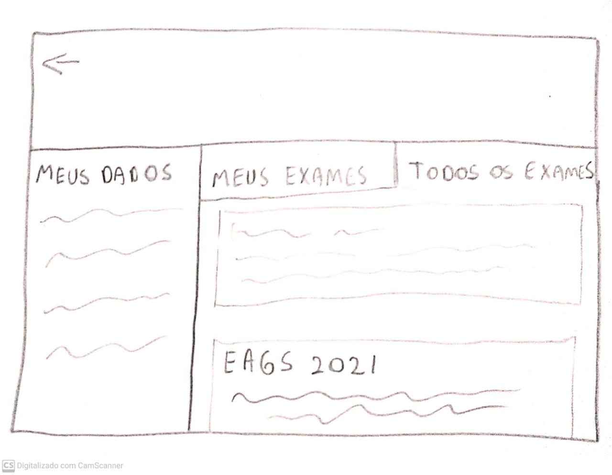

Planejamento do protótipo de papel
Introdução
É inegável que o uso de protótipos durante a atividade de design é de extrema importância para consolidação de ideias e correção das ideias do projeto. Dito isto, estaremos utilizando o método de Prototipação de Papel para a avaliação devido ao seu baixo custo e rapidez. O método de prototipação em papel avalia a usabilidade de um design de IHC representado em papel, através de simulações de uso com a participação de potenciais usuários. Abaixo, apresentamos o planejamento da avaliação que usará o protótipo de papel.
Metodologia
No nosso projeto, a metodologia a ser utilizada será a metodologia de avaliação para prototipação em papel, que foi extraída diretamente do livro de IHC de Simone Barbosa e Bruno Silva. Esse método consiste em 4 fases diferentes: Preparação, Coleta e Interpretação de Dados, Consolidação dos Resultados e Relato dos Resultados. Devido a situação atual da pandemia, a metodologia será aplicada à distância através de uma chamada online com compartilhamento de tela.
| Atividade | Tarefas |
|---|---|
| Preparação | Definir tarefas para os participantes executarem; Definir o perfil dos participantes e recrutá-los; Criar protótipos em papel da interface para executar as tarefas; Executar um teste-piloto. |
| Coleta & Interpretação de Dados | Cada usuário deve executar as tarefas propostas interagindo com os protótipos, mediado pelo avaliador; O avaliador deve listar os problemas encontrados; Refinar os protótipos para resolver os problemas mais simples |
| Consolidação dos Resultados | Priorizar a correção dos problemas não resolvidos Sugerir correções |
| Relato dos Resultados | Relatar os problemas encontrados e sugestões de correção |
Termo de Consentimento
Visando uma maior lisura de todo o processo, os participantes convidados para a avalição terão que concordar com o seguinte termo:
Somos Estudantes de Engenharia de Software, da Universidade de Brasília, e estamos cursando a disciplina de Interação Humano-Computador, ministrada pelo professor Dr. André Barros de Sales. Estamos realizando um projeto que tem como objetivo identificar problemas na interface da plataforma Ingresso.EEAR e sugerir melhorias segundo às normas de IHC.
O objetivo desta avaliação é analisar o fluxo de atividades apresentado no protótipo de papel desenvolvido pela equipe e fornecer possíveis sugestões de melhoria para o mesmo. Por isso, o presente termo visa solicitar o seu consentimento para a realziação dessa avaliação. Sendo assim, e para decidir sobre o seu consentimento, é importante que conheça as seguintes informações sobre a entrevista:
- Os dados coletados durante a entrevista destinam-se estritamente à atividades relacionadas à disciplina;
- Nossa equipe tem o compromisso de divulgar os resultados de nossas pesquisas para os responsávei pela plataforma em estudo. A entrevista será gravada e divulgada na GitHub Pages do grupo.
- O consentimento para a entrevista é uma escolha livre, feita mediante a prestação de todos os esclarecimentos necessários sobre a pesquisa.
- A entrevista pode ser interrompida a qualquer momento, segundo a sua disponibilidade e vontade.
- A entrevista terá duração entre 5 a 15 minutos.
De posse dessas informações, gostaríamos que você se pronunciasse acerca da entrevista:
- Dou meu consentimento para a sua realização.
- Não consinto com a sua realização.
Preparação
Tarefas
Perfil dos Participantes
Serão convidadas pessoas que possuam um perfil semelhante ao das personas e usuários do Ingresso EEAR para serem entrevistados.
Protótipos em Papel
Foram desenvolvidos em papel os prótotipos da plataforma sugerido pela equipe levando em consideração as tarefas a serem realizadas e todas as informações levantadas até então. Para realizar a interação do usuário com o protótipo, serár utilizada a plataforma Marvel.
Link do protótipo na plataforma.









Teste piloto
O presente teste piloto foi realizado com o intuito de identificar e corrigir potenciais erros no planejamento da avaliação.
Coleta e Interpretação de Dados
A coleta de dados deve ser realizada por pelo menos dois avaliadores: um responsável por auxiliar o participante com a utilização da plataforma que simulará o sistema e outro por observar a experiência de uso. Como durante a simulação de uso existe pelo menos um avaliador responsável pela observação, ele pode começar a interpretar os dados da experiência de uso enquanto observa a atuação do usuário.
Além disso foi elaborado o seguinte roteiro de perguntas que serão feitas no antes do início da interação e ao término da mesma para auxiliar o entrevistador na coleta e interpretação de dados:
| Número | Pergunta | Opções de resposta |
|---|---|---|
| 1 | Em uma escala de 1 a 5, onde 1 equivale a muito inexperiente e 5 a muito experiente, qual é seu grau de experiência com a plataforma Ingresso EEAR? | 5 - Muito experiente 4 - Experiente 3 - Neutro 2 - Inexperiente 1 - Muito inexperiente |
| 2 | Em uma escala de 1 a 5, onde 1 equivale a muito fácil e 5 a muito difícil, avalie o grau de dificuldade na execução das tarefas | 5 - Muito difícil 4 - Difícil 3 - Neutro 2 - Fácil 1 - Muito fácil |
| 3 | Alguma sugestão de melhoria para a realização das tarefas? | Pergunta discursiva |
A pergunta número 1 deverá ser feita antes do inicio da interação e as demais após o término.
Consolidação dos resultados
Aqui os avaliadores verificam quais problemas não puderam ser resolvidos no reprojeto rápido do protótipo de interface e sugerem propostas de correção desses problemas ou de caminhos que podem ser explorados para melhorar a interface. Além disso, o avaliador deve definir a hierarquia e severidade dos erros, para auxíliar na posterio correção.
Relato dos Resultados
Nesta etapa os avaliadores devem documentar:
- Os objetivos da avaliação;
- Uma breve descrição do método de prototipação em papel;
- O número e o perfil de avaliadores e dos participantes;
- As tarefas executadas pelos participantes;
- Uma lista de problemas de usabilidade corrigidos durante os ciclos de avaliação e reprojeto, indiciando:
- Local onde ocorreu;
- Fatores de usabilidade prejudicados;
- Descrição e justificativa do problema;
- Correção realizada no protótipo de papel;
- Indicação se o problema voltou a ocorrer depois da correção.
- Uma lista dos problemas de usabilidade ainda não corrigidos, indicando:
- Local onde ocorreu;
- Fatores de usabilidade prejudicados;
- Descrição e justificativa do problema;
- Prioridade para correção;
- Sugestões de correção;
- Indicações de partes do sistema que podem ser mais bem elaboradas.
Bibliografia
Barbosa, S. D. J.; Silva, B. S. da; Silveira, M. S.; Gasparini, I.; Darin, T.; Barbosa, G. D. J. (2021) Interação Humano-Computador e Experiência do usuário.
Versionamento
| Versão | Data | Modificação | Autor |
|---|---|---|---|
| 1.0 | 23/04/2021 | Abertura do documento | Daniel B., Denys, Yan |
| 1.1 | 23/04/2021 | Modificação da introdução | Denys |
| 1.2 | 29/04/2021 | Ajuste geral no documento | Daniel B. |
| 1.3 | 29/04/2021 | Melhorias dos tópicos | Daniel P. |
| 1.4 | 29/04/2021 | Melhoria do termo de consentimento e ajustes após o teste piloto | Daniel P. |